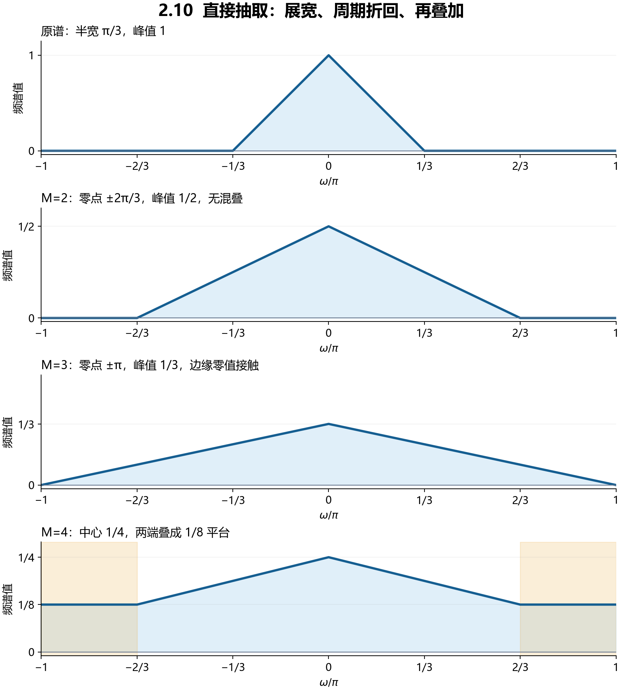
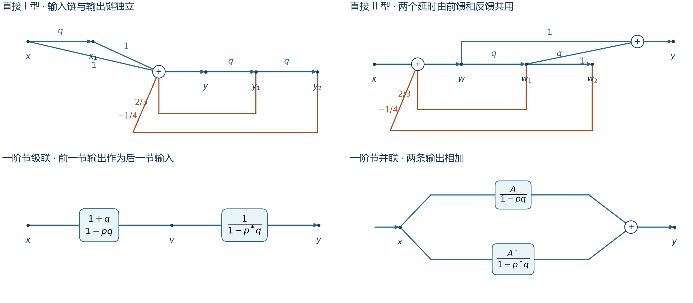
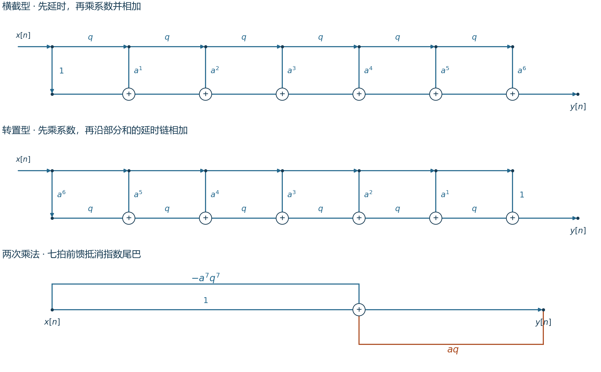

数字信号处理 · 指定作业大题讲义
教材第一至六章共 21 道指定作业、17 道往年期末原题。两类题按知识点编入各章，标题用「【作业】」或「【期末原题】」区分。
每题前都有一段「做题必备知识」，提示公式、适用条件和第一步做法。
一、从哪里开始看
先看各章的题型路线。复习一道题时，先读标题下的「做题必备知识」，尝试写出第一步，再核对推导。学完一题，可以马上做附近标注「【期末原题】」的同型题。
| 讲义 | 指定题 | 要练到的程度 |
|---|---|---|
| 第一章：离散时间信号与系统 | 1.2、1.4（4）、1.8（4）、1.11（2） | 会判断整数周期，会由定义推插零性质，会结合 ROC 做逆 z 变换，会按定义证明系统性质 |
| 第二章：采样与重建 | 2.4、2.10、2.11 | 会算模拟—数字—模拟链路，会画抽取与插零后的准确频谱 |
| 第三章：DFT 与 FFT | 3.1、3.8、3.11、3.14、3.25 | 会写五道题的推导链，分清周期、归一化、模 N 下标和 FFT 输入如何构造 |
| 第四章：IIR 滤波器设计 | 4.1、4.4、4.14 | 脉冲响应不变、双线性变换、带通指标折回低通原型 |
| 第五章：FIR 滤波器设计 | 5.2、5.4、5.8 | 窗函数、同相位互补、频率采样 |
| 第六章：数字滤波器结构 | 6.1（b）、6.5、6.6 | 结构图读写、直接型/级联/并联、几何和实现 |
| 题型与公式速查 | 全部 21 题 | 考前复盘、公式默写、用题号找到方法 |
往年题所在章节为第一章（2、5、12），第二章（1、4），第三章（6、11），第四章（7、15、16、9），第五章（10、17、8、3），第六章（13、14）。
章节编号以作业 PDF为准：本讲义第三章是 DFT/FFT，不是第一套课件的第三章 IIR 滤波器设计。
二、作业和往年题怎样串起来
六章可以用一道综合题串起来：把模拟波形采成序列，找出要保留的频率，设计滤波器，再把它画成能实现的结构。
| 走到哪一步 | 要带走的量或对象 | 做题时先问什么 |
|---|---|---|
| 第 1–2 章，得到序列 | 和 | 单位是什么？采样或抽取后是否折叠？ |
| 第 3 章，分析频率成分 | 和 | 是周期还是 DFT 点数？样本有没有插零、折叠或补零？ |
| 第 4–5 章，设计想要的响应 | 带边、衰减、 或 | 给的是模拟原型，还是数字指标？要不要严格线性相位？ |
| 第 6 章，把滤波器实现出来 | 前馈系数、反馈系数、延时个数 | 哪些支路相加？哪些节相乘？符号与稳定性验过了吗？ |
- 周期与频率：1.2 → 2.4 → 3.1。先判断时间序列怎样重复，再理解模拟频率如何变成数字频率，最后看更换 DFS 周期长度为何只改变频率格点和系数记法。
- 插零与频谱重复：1.4（4）→ 2.11 → 3.14。同一个操作，分别在 DTFT、频谱图、DFT 上表达。
- 变换与系统：1.8（4）认识逆 z 变换和 ROC；1.11（2）区分一般系统和 LTI 系统；2.4、3.8 才能使用 LTI 频率响应。
- DFT 的周期结构：3.11 使用圆周对称；3.25 使用按模 N 折叠。它们都要求把 DFT 下标放到一个周期中理解。
- IIR 到结构：4.1、4.4、4.14 先求系统函数；6.1（b）、6.5 将系统函数与差分方程、流图互译。往年第 7、13、15、16 题可串练。
- FIR 到结构：5.2 从理想频响到抽头，5.4 练同相位互补，5.8 在频率格点上设计响应，6.6 练抽头结构与高效实现。往年第 3、8、10、14、17 题可串练。
三、大题作答的共用骨架
- 写清对象与条件：连续还是离散？DTFT、DFS 还是 DFT？DFT 点数多少？是否 LTI？ROC 给了什么？
- 写所用定义或性质：不要只写最后一个结果。证明题尤其要给出求和式、代入或换元。
- 处理下标和范围：抽取要考虑频谱以 2π 为周期；DFT 要考虑模 N；逆 z 变换要说明序列向左还是向右。
- 给出最终结果及必要标注：频谱图要有横轴、峰值、零点、重复周期；数值题要有幅值、相位、单位。
- 做一个短检验：例如 L=1 应回到原序列；常数序列的 DC 应正确；z→∞ 应与因果序列的首项相符。
这些是帮助把推导写完整的步骤，不是老师公布的评分细则。
四、题目来源与参考资料
题面均逐页查看扫描 PDF，不用网上其他版本的相同题号代替。
| 指定题 | 扫描文件与 PDF 页序 | 原书印刷页码 |
|---|---|---|
| 1.2 | 数字信号处理1-2章习题.pdf 第 1 页 |
34 |
| 1.4（4） | 同上，第 1—2 页，条件在前一页 | 34—35 |
| 1.8（4） | 同上，第 2 页 | 35 |
| 1.11（2） | 同上，第 3 页 | 36 |
| 2.4 | 同上，第 5 页 | 76 |
| 2.10、2.11 | 同上，第 6—7 页，2.11 跨页 | 77—78 |
| 3.1 | 数字信号处理3-6章习题.pdf 第 1 页 |
132 |
| 3.8、3.11、3.14 | 同上，第 2—3 页，3.14 跨页 | 133—134 |
| 3.25 | 同上，第 3—4 页，题面跨页 | 134—135 |
| 4.1、4.4、4.14 | 同上，第 6—7 页 | 179—180 |
| 5.2、5.4、5.8 | 同上，第 9—10 页 | 221—222 |
| 6.1（b）、6.5、6.6 | 同上，第 12—13 页 | 271—272 |
| 往年第 1—17 题 | 期末复习.pdf 第 1—10 页，第 11—12 页为参考公式 | 1—12 |
课程解释参考本地第一套 PPT 及 DSP-Atlas。第一套
第1章-1.pptx
的采样/重建、频率换算、周期性，第1章-2.pptx
的变换与逆变换，第1章-3.pptx 的系统与频响，以及
第2章-1.ppt 的 DFS/DFT 是主要对照。
相关概念可在 DSP Atlas 查阅。
两个必须统一的口径：
- 本讲义的 DFS 正变换不乘 1/N，逆变换乘 1/N。3.1 的“系数加倍”依赖这个约定；若改用归一化级数系数，结论相应改变。
- 本讲义统一定义 。3.8 扫描题面中的 存在正负号核对问题，正文专门解释，推导一律写成明确的 。
第一章 · 离散时间信号与系统
指定作业：1.2、1.4（4）、1.8（4）、1.11（2）。 目标：周期题算得准，变换题写得出推导，系统判断有证明或反例。
本章题型路线
| 题面给什么 | 先写什么 | 对应题号 |
|---|---|---|
| 正弦序列和数字角频率 | ，要求 为正整数 | 1.2 |
| 偶下标为原样本、奇下标为零 | DTFT 定义里只保留 | 1.4（4） |
| 和收敛域 | 化为标准分式，再看 ROC 位于极点哪边 | 1.8（4） |
| 输入输出关系 | 线性测叠加，时不变测移位，各写一次比较 | 1.11（2） |
【作业】1.2：判断周期性并求基波周期
做题必备知识 离散周期 必须是正整数。对每项把 约成最简分数，分母给基波周期。多项和还要排除同频抵消。
1. 离散下标必须是整数
序列 只在整数 上取值。 在 为 1，其余为 0； 在 为 1，其余为 0。
给定非零角频率 ，连续时间余弦的基波周期为 ，可以是非整数。离散序列的周期必须是正整数。
题目
判断下列序列是否周期；若周期，确定基波周期。
怎么想到方法
对非退化的单个正弦/余弦序列，要求 ，可令相位增加整数圈：
所以先把 化为最简分数 ，基波周期为 。频率比为无理数时，一般没有整数周期；恒零等退化序列须单独处理。
（1）完整解题
相位增量要求
3 与 14 互质，最小正整数解为 ，故
初相位 在 与 中相同，因此不改变这里的周期。
（2）完整解题
两项分别有
取公共周期
还要证明这是最小周期。把总和写成 56 点 DFS，正弦占据下标 ，余弦占据下标 ，四个谱线互不重合且都非零。若 也是周期，平移 后这四个系数必须保持原值。由 DFS 唯一性，得到 及 ，所以 且 。最小的 为
例如 不是周期：第二项重复，但第一项相位增加 ，符号反转；取 即可看出总和不同。
卷面步骤与易错点
- 写 。
- 求每项的最小正整数周期。
- 多项相加求最小公倍数，并排除特殊抵消。
不能写 ：这不是整数。多项和的最小公倍数首先保证的是“一个周期”；若原题两项恰好相消，就不能未经检查宣布它是基波周期。
同类题迁移： 的频率比为 ，周期为 20； 的频率比 为无理数，没有正整数周期。
【作业】1.4（4）：二倍插零序列的 DTFT
做题必备知识 先写 DTFT 定义。插进去的零不参与求和，保留 就能把新频率与原频率对应起来。
2. DTFT 与 z 变换是在做什么
DTFT 把序列变成关于数字角频率 的函数：
因为整数 满足 ，频谱以 为周期。它的频率变量连续，并非 DFT 的离散下标 。
z 变换为
它既要给代数表达式，也要给使级数收敛的收敛域 ROC。单位圆 若在 ROC 内，才可直接把普通收敛意义下的 z 变换限制到单位圆，得到 DTFT。
题目
已知实因果序列 的 DTFT 为 ，求
的 DTFT。
先看清时域发生了什么
若原序列从 起是 ，二倍插零后按 6 点表示就是
原来第 个样本放到新下标 。不是只取原序列的偶数下标，也不是把非整数处的 另作插值。
从定义逐步推导
只有偶数项可能非零，令 ：
故
推导只用到偶数下标上的样本。只要 DTFT 存在，复序列和非因果序列也满足此性质。
为什么频谱反而变窄
原来频率 处的特征点，在新频谱满足 。因此频率轴压缩为原来的 1/2，同时出现频谱镜像。 仍是 周期函数，而且具有更短的周期 。
本题不产生 1/2 系数。不能把连续时间傅里叶变换的时间尺度变换 公式直接套给带整数条件的序列。
推广与关联
每两点之间插入 个零：
第二章 2.11 要把这个公式画成图；第三章 3.14 要在新 DFT 格点上对它采样。
【期末原题】第 2 题 · DTFT 换元
做题必备知识 右边指数的求和从阶跃开启的下标开始。先做反折 ，再按左右移方向乘 。
从 开始，首项 。其 DTFT 为 。第二小问将 看成反折后的右移和左移，得到
【期末原题】第 5 题 · 反折与二倍插零
做题必备知识 DTFT 反折对应 。时域二倍插零时只有偶下标非零，令 。
的 DTFT 是 。偶下标写 、奇下标为零时得到 ，与作业 1.4（4）相同。
【期末原题】第 12 题 · 移位反折和实部
做题必备知识 把 看成反折后的右移。，时域共轭对应频域反折后共轭。
对应 。利用 ，得到 。
【作业】1.8（4）：含常数项的逆 z 变换
做题必备知识 先把分母化成 ，再用 ROC 选左右边序列。分式拆出的常数是 的系数。
3. 逆 z 变换最常用的两对
同一个分式对应左右两种序列，ROC 决定选哪一个。此外：
因此分式拆出来的常数不能丢，它对应的不是“每时刻都等于常数”，而是一个冲激。
题目
求逆 z 变换。原式中含 ，因此讨论前提为 。
怎么想到方法
分母不是熟悉的 ，先把它化为标准形式；同时分子、分母关于 同次，拆分时会有一个常数项。
第一步：标准化分母
所以
极点在 ，不是 。给定 ROC 在该极点外侧，非退化情形应取右边序列。
第二步：拆成常数加标准分式
设
通分后比较常数项、 项，得到
即
第三步：按 ROC 选右边序列
也可按首项单独写成
两个检验
首项检验：因结果为因果序列，。代入答案：，一致。
代回检验：对答案求 z 变换，得到 ，合并即回到原式。
特殊值与易错点
- 时原式约分为 ，故 。
- 时原式约分为 ，故 。
- 这两个值发生零极点抵消，冲激序列的实际最大 ROC 扩大；题给区域仍在其收敛范围内。不能把约掉的点继续当作真实极点。
- 不能把常数 丢掉；不能把 写成 ；不能不看 ROC 就套右边变换对。
同类题模板：先约分 → 分母化成 → 分出常数/多项式项 → 按每个极点与 ROC 的关系选左右序列 → 检查首项或代回。
【作业】1.11（2）：平方系统是否线性、时不变
做题必备知识 线性用叠加或倍乘检验，时不变用输入延迟与输出延迟比较。只需反例即可否定线性。
4. 系统线性、时不变分别比较什么
设系统算子为 。
线性要求对任意输入和任意常数成立：
时不变要求任意整数 满足：
线性比较“先组合还是先过系统”；时不变比较“先延迟还是先过系统”。两个判断相互独立。
题目
判断线性与时不变性。 表示样本平方，不是 。
（1）非线性：给一个反例即可
选 ，则
二者不相等，不满足齐次性，所以
也可用一般式说明：
（2）时不变：对任意延迟验证
原输入的输出是 。把输入延迟 ：
其输出为
把原输出延迟同样的量：
两者对任意输入和任意整数延迟相等，因此
容易混淆的对照
| 系统 | 线性 | 时不变 | 核心原因 |
|---|---|---|---|
| 否 | 是 | 平方破坏叠加，但与时间平移可交换 | |
| 是 | 否 | 对输入仍线性，但绝对时刻 n 决定增益 | |
| 否 | 是 | 零输入产生非零输出；固定偏置不随时间变 | |
| 是 | 是 | 固定延迟保留叠加与平移关系 |
不要说“没有显式 n 所以一定时不变”来代替证明；例如 就需要认真做延迟比较。本题也不能因其时不变就使用 ：这种频域乘法描述需要 LTI 条件。
六、本章闭卷检查
遮住上文，分别完成：
- 写出 ，重算 1.2 的 14、56。
- 只用一行换元 推出 1.4（4）。
- 把 1.8（4）拆成“常数 + 标准分式”，并算出 。
- 用一个反例证明非线性，再对任意 证明时不变。
能够独立完成这些步骤，比记住四个最终答案更能应对改题。
第二章 · 采样与重建
指定作业：2.4、2.10、2.11。 本章按作业 PDF 的章名编号。重点是模拟—数字频率换算、抽取的频谱混叠、插零的频谱镜像。
本章题型路线
| 题面给什么 | 先写什么 | 对应题号 |
|---|---|---|
| 模拟正弦、采样率和数字频响 | 先用 找到应代入的频率 | 2.4 |
| 直接抽取 | 展宽、除以 ，将越界副本折回后相加 | 2.10 |
| 直接插零，保留原样本 | 代入 ，列中心和半宽 | 2.11 |
【作业】2.4：A/D—数字系统—D/A 的输出
做题必备知识 两端是模拟频率，中间是数字频率。先用 进数字域，频响改幅度和相位，理想 D/A 再按同一个 换回。
三种频率的单位与换算
| 符号 | 含义 | 单位 | 关系 |
|---|---|---|---|
| 模拟频率 | Hz | ||
| 模拟角频率 | rad/s | ||
| 数字角频率 | rad/sample |
采样周期 。对 采样：
数字频率以 为周期；画 DTFT 常取主值区间 ，区间外还要按 重复。
1. 正弦通过 LTI 系统
若系统在 的频率响应为
则实系数 LTI 系统对正弦的稳态响应为
频率保持，幅度乘 ，相位加 。 若题目另外规定了有限时刻开机和初值，还要考虑瞬态；2.4 未给这些条件，按理想转换链路与正弦稳态解释。
题目
信号依次经过 A/D、数字系统 、D/A，其中
求模拟输出 。按理想 A/D、同采样率的理想重建 D/A 求解。
第一步：识别输入频率
采样频率 ，输入正弦不发生混叠。
第二步：转换为数字频率
故
第三步：在该数字频率处计算 H
因此
其幅值与相位是
所以数字输出为
第四步：理想重建回模拟域
重建频率为
最终
也可写为 。
同类大题怎么写
多频输入就逐项走这条链，再利用线性叠加。若模拟输入超过 Nyquist 频率，先求采样后的等效数字频率，不能默认输出仍恢复原模拟频率。
易错：把 当作 Hz；把 的 2 kHz 当作 2 Hz；算成 ；只改幅值不改相位；把理想转换中间的谱尺度系数误留成最终额外的 或 。
【期末原题】第 1 题 · 125 Hz 正弦采样
做题必备知识 先写出奈奎斯特速率，再把临界采样率代回正弦。非零周期序列的最小正整数周期，可从最简频率比的分母判断。
奈奎斯特速率是 250 Hz。若从 按该速率采样，，样点不保留这个正弦。零序列本身是周期序列，任意正整数都是它的周期。若第（3）问在 Hz 下求非零序列最短的整数周期，令 为最简分数，最小可取 ，故 Hz、。原参考解给的 500 Hz 是一个可行解，周期为 4。
【期末原题】第 4 题 · 采样后求周期
做题必备知识 用 换算，最高频率落在 时再看初相位。多项相加时先取各项周期的最小公倍数。
频率为 1500 和 4000 Hz，奈奎斯特速率 8000 Hz。按题面取临界速率且从 采样，得到 。两个基波周期为 16、2，总和最小周期 16。临界点这里是零初相余弦，因此样本保留了该分量；一般相位的边界正弦需另作判断，要保证任意相位无歧义时用严格大于。
【作业】2.10：直接抽取后的频谱
做题必备知识 抽取谱中的每一份三角谱横轴展宽 倍、幅值乘 。超出主值区间的部分需按 折回并逐点相加。
抽取与插零的公式并排记
抽取 倍：
插零 倍：
| 操作 | 单个谱形的横轴 | 幅度系数 | 最需警惕 |
|---|---|---|---|
| 抽取 M 倍 | 展宽 M 倍，移位副本叠加 | 每份乘 1/M | 超过主值区间的部分折回，可能相加 |
| 插零 L 倍 | 压缩为 1/L，出现 L 份镜像 | 无额外 1/L | 不要漏画镜像；直接插零不等于已低通插值 |
这两题都明确说“不滤波”，不能自行删去混叠或镜像。
题目与原谱
原序列的频谱在一个主值区间内为三角形：
并以 为周期。对 直接抽取，求输出频谱，不加抗混叠滤波器。
抽取公式为什么有求和与 1/M
先在原下标 上用周期冲激掩码保留 M 的整数倍：
于是
这说明不能只把原谱拉宽就停笔：还要考虑各移位副本落回主值区间后怎样相加。
先判断是否混叠
本题原谱在 内处处非零，且 。展宽后的相邻副本中心间隔为 ，因此只要 就没有非零谱重叠，即 。这一简化判据适用于本题这样的基带低通谱。
- ：展宽到 ，不混叠。
- ：展宽到 ，本题端点谱值为零，临界接触，没有非零谱重叠。
- ：展宽到 ，越过 的部分折回并与主谱相加，发生混叠。
临界 的结论利用了本题边缘为零的三角谱，不能泛化成“边界有任意谱线也必然无失真”。
（1）M=2
一个主值区间内只有中央副本非零：
画图标出 、、，两侧零区间延至 ，然后按 重复。
（2）M=3
画图标出 、、，再作 周期延拓。
（3）M=4：叠加后边缘是平台
先画中央的展宽副本：
它的完整支撑实际上延伸到 。相邻副本中心相隔 ，因而在主值区间两端额外贡献
把两份相加：
两段在 处都等于 ，连续衔接。
关键图点：
| 0 | |||||
|---|---|---|---|---|---|
| 1/8 | 1/8 | 1/4 | 1/8 | 1/8 |

图中横轴以 表示，例如 就是 ；M=4 的阴影表示发生副本重叠的区间。
作图时的检验
- 三张结果都关于零频偶对称，并按 重复。
- 峰值在本题分别为 ；这些数来自本题没有副本贡献到零频处，不是任意输入的抽取峰值定律。
- M=4 两端不能画成零，也不能把越界部分直接剪掉；叠加后是高度 的平台。
【作业】2.11：直接插零后的频谱
做题必备知识 插零对应 。每份图横向压缩为 ，镜像中心相隔 ，谱峰无额外幅值因子。
题目
仍用 2.10 的三角形原谱，分别以 直接插零，求不滤波的输出频谱。
方法：频谱压缩并重复，峰高不变
由第一章 1.4（4）的推广：
每个三角形的中心、半宽、峰值分别为
在任意中心附近，若 ，
其他位置为零，整个频谱按 周期重复。相邻中心间隔 ，也就是输出具有更短的周期 。
三种 L 的准确作图数据
| L | 主值区间内的三角形中心 | 每个三角的半宽 | 中央三角零点 | 峰值 |
|---|---|---|---|---|
| 2 | 1 | |||
| 3 | 1 | |||
| 4 | 1 |
当中心在 时，画在主值区间两端的是同一周期边界三角的两个半边，不能把它们数成两个额外完整镜像。
例如 L=2 在 内的完整分段式是
L=3 的左右镜像边界为
L=4 的中间左右镜像边界为
周期边界两端还有 、 的半边。

如果改问“完成理想插值”
本题仅直接插零，因此保留全部镜像。若另要求完成 L 倍理想插值，才在插零后加抗镜像低通，常用理想响应为
只保留中央谱像并补偿插值幅度。增益 L 属于后接的插值滤波器，不能预先乘进直接插零结果。
五、三题合起来的易错清单
| 易错做法 | 修正 |
|---|---|
| 频响代入模拟频率 | 先化为数字频率 |
| 求 写成 1.3 | 应为 |
| 抽取只展宽，不处理越过 的部分 | 按周期移回，再逐点相加 |
| M=4 仍画一个零点在 的三角 | 两端应是 平台 |
| 插零后只画中央三角 | 一个主值区间内需包含全部镜像 |
| 插零谱峰写成 | 直接插零公式没有这个系数 |
| 把“不滤波”改成理想低通后的图 | 本题必须保留混叠结果或镜像 |
六、本章闭卷检查
- 不看答案，沿频率换算链算出 2.4 的幅度、相位与模拟输出频率。
- 画三张抽取图，并解释 M=4 的平台为何恰好是 。
- 对 L=4，标全中央、、边界半三角，写出半宽 。
- 用一句话说出抽取与插零的差别：抽取展宽并可能混叠；插零压缩并产生镜像。
第三章 · DFT 与 FFT
指定作业：3.1、3.8、3.11、3.14、3.25。 五道题分别练：DFS 周期长度变换、周期输入的 LTI 响应、DFT 圆周对称、插零的 DFT、用 FFT 计算指定单位圆采样。
本章题型路线
| 题面给什么 | 先写什么 | 对应题号 |
|---|---|---|
| 同一周期序列按更长周期做 DFS | 拆开重复的块，处理旋转因子的相长和相消 | 3.1 |
| 周期输入通过 LTI | 逆 DFS 写成复指数，逐频率乘系统响应 | 3.8 |
| 实序列的偶/奇对称 | 下标按模 ，把反折与共轭对称结合 | 3.11 |
| 点间插零或指定单位圆样值 | 先写新 DFT 的求和，再决定重复、折叠或尾补零 | 3.14、3.25 |
【作业】3.1：同一周期序列改按 2N 周期计算 DFS
做题必备知识 DFS 分析式不乘 ，合成式乘 。把新周期看成重复的两段，用指数因子决定什么下标相加或抵消。
1. DTFT、DFS、DFT、FFT 的区别
| 名称 | 处理什么 | 结果是什么 | 本章用途 |
|---|---|---|---|
| DTFT | 一般离散序列 | 连续频率、2π 周期的函数 | 理解频谱、系统响应 |
| DFS | 周期序列 | 一组周期重复的离散系数 | 3.1、3.8 |
| DFT | N 个样本 | N 个频率格点上的数值 | 3.11、3.14、3.25 |
| FFT | 一种快速计算方法 | 与相同点数 DFT 完全相同的结果 | 3.25 |
FFT 不另定义一种变换。3.25 的核心是先构造正确的 N 点输入，再做一次 N 点 FFT。
2. 统一约定
N 点 DFT 与 IDFT：
本讲义的 DFS 使用相同的归一化：
区别是
本来就在全体整数上周期重复；有限长
只指定一段样本。第一套 第2章-1.ppt 第 7
页直接采用上面的 DFS 口径。
题目
一个周期为 N 的序列 也以 2N 为周期。以 N 作为周期长度计算的 DFS 为 ；以 2N 作为周期长度计算的 DFS 为 。由前者求后者。
注意：题目没有改变序列，也没有在原样本之间插零，只是把 DFS 的一个计算周期从 N 点选成 2N 点。
推导的关键：把两段 N 点拆开
按定义
将后半段令 ，利用 ：
若 为偶数，前因子为 2，指数化为原来 N 点 DFS 的指数：
若 k 为奇数，前因子为零。
最终结果
在 内，
之后按 2N 周期延拓。原谱线保留在新频率格点的偶数位置，新增的奇数格点没有成分。
为什么系数加倍却没有使原信号幅度加倍
因为逆变换的系数也从 变为 ：
若有人把“傅里叶级数系数”定义成 ，则新系数满足 ，而不是加倍。两种记法都可成立，但不能混用定义。
一眼检查与推广
选常数序列 ：N 点求和的 DC 为 N，2N 点求和的 DC 为 2N，验证了因子 2。
改按 qN 周期计算时，同理得到
大题记忆线：定义 → 拆成两段 → 用时域周期性 → 提取 → 分奇偶。
【作业】3.8：周期输入通过 LTI 系统后的输出
做题必备知识 对 LTI，单个输入 的输出为 。先展开逆 DFS，频响的自变量跟着合成式中的复指数频率走。
题目与必要条件
周期为 N 的 通过系统 ，用其 DFS 系数 表示输出 。
本题按 LTI 系统解释，并要求相关频率处的响应存在。一个足够条件是 绝对可和，即系统 BIBO 稳定；这样周期输入的卷积有意义。讨论的是周期稳态/对全时域周期输入的零状态响应，不额外叠加任意初值产生的自然响应。
先处理扫描题面的符号
扫描页把目标式写为
但对课件明确采用的 和 ，与 对应的系统增益应当是
因此扫描目标式与本课件约定存在一处符号不一致。下文用明确的指数形式推导，不把这个符号差异悄悄忽略。作答时可先写明 W 的定义，再写推导与指数形式结果；若老师采用其他定义，应整套核对正、逆变换，不能只改单个符号。
方法一：复指数是 LTI 系统的特征输入
先看单个复指数 ，其中 ：
它通过系统后频率不变，只乘一个复数增益。再把输入用逆 DFS 展开：
利用线性逐项通过系统，得到
等价地，在本讲义 W 约定下：
方法二：从卷积直接代入，适合卷面证明
即得上式。这里一个和为有限和；在上述收敛条件下交换求和成立。
本题还应读出的两个结论
- 每根离散谱线单独乘以系统在该频率的响应。
- 输出仍以 N 为一个周期，但基波周期可能缩短，例如系统滤掉部分谱线，或输出恒为零。
用一拍延迟检查正负号
取 ，则 ，输入 应输出 。
- 正确代入 ，得到延迟。
- 若误代入 ，则得到 ，变成超前。
例如 、 时，一拍延迟的实际输出为 。若按题面误代，算出的却是 。取 就能直接看出差别。
【作业】3.11：证明实圆周偶/奇序列的 DFT 对称性
做题必备知识 先区分普通反折与模 圆周反折。实序列有共轭对称，圆周偶/奇再给一条独立关系，两条关系合起来才能判断实部、虚部。
模 N 下标是什么
记 为 r 除以 N 的余数，结果取 。
例如 N=4 时，、。所以圆周反折
这与把四个数从右往左写成 不同。
题目
证明：若 N 点实序列满足 ，则 为实且偶对称；若满足 ，则 为纯虚且奇对称。
这里 必须按模 N 理解，即 ，特别是 时对应自己。
第一步：由实序列得到共轭对称
由于 ，
因此
“实序列”只保证共轭对称，本身不保证频谱全实。
第二步：圆周反折带来频域反折
令 ，对其做 DFT，并换元 。n 遍历一个周期时 m 也恰好遍历一个周期：
第三步：分别合并偶、奇条件
实圆周偶序列满足 ，故
再与共轭对称结合：
因此
实圆周奇序列满足 ，故
与共轭对称结合：
这表示实部为零，因此
这里“纯虚”允许数值为零。
用三角函数再理解一遍
圆周偶 x 与奇正弦相乘后，配对相消，虚部为零；圆周奇 x 与偶余弦相乘后配对相消，实部为零。这是上面代数证明的直观解释。
固定点不可漏
圆周奇序列在反折后仍落回自己的位置必须为零：
频域同理，奇频谱满足 ，偶数 N 时 。
四点例子
是实圆周偶到实圆周偶；
是实圆周奇到纯虚圆周奇。
反过来，普通左右对称数组 的 DFT 是 ，并不全实。因为它关于 对称，不是关于圆周原点对称。
大题记忆线：实 → 共轭对称；圆周偶/奇 → 频域偶/奇；两条件合并 → 全实/纯虚。
【期末原题】第 6 题 · 实序列 DFT 的共轭对称
做题必备知识 在 DFT 指数中代入 ，利用 。只剩指数正负号的差异，实输入允许把它写成共轭。
将 代入 DFT 定义，用 和 得 。偶数 时 ，该点等于自己的共轭，故为实数。
【作业】3.14：时域插零后做 rN 点 DFT
做题必备知识 时域在点间插零会移动样本的下标，尾部补零则保留下标。用 代入新 DFT 的指数核。
题目
已知 N 点有限长序列 的 N 点 DFT 为 。每两点之间插入 个零，按 rN 点表示新序列
求其 rN 点 DFT 与 X 的关系。r 为正整数；最后一组后的零也计入 rN 点数组。
完整推导
这是原 N 点 DFT 的表达式，但新 k 取 。原表达式对 k 以 N 为周期，所以
即把原 N 个 DFT 值完整重复 r 遍，无额外 r 或 1/r 系数。
小例子
N=3，r=2，若 ，则
其 6 点 DFT 为
与“尾部补零”务必分开
| 操作 | 新时域样本 | rN 点 DFT 的含义 |
|---|---|---|
| 点间插零，本题 | 原样本改放到 rm | ，旧 DFT 重复 r 遍 |
| 尾部补零 | 原样本仍放在 m | 对同一个原 DTFT 更密采样；仅 保证对应 |
第一章 1.4（4）给出连续频率关系 ；把 取为 ，也立即得到本题结果。
大题记忆线：新 DFT 定义 → 只保留 → 约去 r → 标明新 k 范围与模 N 周期。
【作业】3.25：用一次 N 点 FFT 求单位圆 N 个样值
做题必备知识 先把单位圆采样位置代进 。与 相差整数倍的下标在所有目标点上的指数相同，可以先相加。
题目
x 为 M 点有限长序列，，其 z 变换为
要求在
处的全部样值。分别讨论 与 ，说明如何用一次 N 点 FFT 得到。
起点：代入单位圆采样点
这与 N 点 DFT 的指数核完全一致，问题只在于原输入有 M 点，而 FFT 需要 N 点。
（1）N≤M：先按模 N 折叠相加
把原下标写成
因为整数 k、q 满足
所以相隔 N 个样本对每个目标频率格点都有相同的指数因子，可以先相加。
构造 N 点序列
然后
故
对 v 做一次 N 点 FFT 即得到全部指定样值。 时每组只有一个样本，折叠退化为直接使用原序列。
数值例子：M=7，N=4
取 ，按余数分组：
| 新下标 m | 合并的原样本 | v[m] |
|---|---|---|
| 0 | x[0]+x[4] | 6 |
| 1 | x[1]+x[5] | 8 |
| 2 | x[2]+x[6] | 10 |
| 3 | x[3] | 4 |
所以只需对 做 4 点 FFT，得到
这些正是原七点序列的 z 变换在四个指定单位圆点上的样值。若直接截取 去做 FFT，连 DC 都会从正确的 28 变成 10。

（2）N>M：尾部补零到 N 点
构造
于是
做一次 N 点 FFT 即可。
两种情况的统一表达
若把有限支撑外的 x 都视为零，则都可写为
N≥M 时不会把不同的非零样本叠在一起；N<M 时同一余数类的样本可能叠加，称为时域混叠。
这里时域混叠不妨碍求出指定频率样值：题目要的是 N 个 ，不是要求用这 N 个数唯一恢复原来的 M 个样本。恢复目标与求值目标必须分清。
FFT 点数不能随意换
题目指定 N 个等距采样点，就需要相应的 N 点 DFT。不能为了使用基二算法，随意把 N 换成下一个 2 的幂并声称频率格点不变。N 不是 2 的幂时，数学上的 N 点 DFT 仍然成立，可使用适用点数的 FFT 方法。
大题记忆线：代 → 比较 M、N → 长则按模 N 相加，短则尾部补零 → 一次 N 点 FFT。
【期末原题】第 11 题 · 采样与 DFT 选点
做题必备知识 采样混叠看 ，DFT 的整周期截取看 。要让每条频率落在格点上，各自的 都须是整数。
最高频率 1500 Hz，奈奎斯特速率为 3000 Hz。取 Hz 时 ，最小公共周期 40。要让两条谱线都恰落在 DFT 栅格上，最小点数 ，对应频率格点 和 （以及各自的负频率格点）。参考解在这一步的“不混叠”是按整周期采样以避免频谱泄漏理解；采样混叠由 决定。
七、五题总对照：不要把“零插到哪里”记混
| 题目 | 时域操作 | 频域结果 |
|---|---|---|
| 3.1 | 同一 N 周期序列，用 2N 点表示一个周期 | 新 DFS 奇数格点为零，偶数格点为旧系数的 2 倍 |
| 3.14 | 每个原样本后插 r−1 个零 | 新 rN 点 DFT 是旧 N 点 DFT 的 r 次重复 |
| 3.25，N>M | 样本位置不变，只在尾部补零 | 同一个原 DTFT 上的 N 个频率采样 |
| 3.25，N<M | 下标同余的原样本相加 | 得到原 z 变换在 N 个指定单位圆点的值 |
八、本章闭卷检查
- 3.1 中不看书推到 ，说明为何有因子 2。
- 3.8 写出卷积、逆 DFS 展开，指出内层求和就是频率响应，并用一拍延迟查正负号。
- 3.11 写出“共轭对称 + 圆周偶/奇”的两条等式，再合并结论。
- 3.14 令 ，说明为何不是旧 DFT 末尾补零。
- 3.25 给一个 M>N 且 M 不是 N 整倍数的例子，正确合并最后不足一组的样本。
第四章 · IIR 滤波器设计
指定作业 4.1、4.4、4.14。教材习题扫描第 6–7 页（印刷页 179–180）。往年复习 PDF 对应第 7、9、15、16 题。
本章题型路线
| 看到什么 | 第一步 | 对应题 |
|---|---|---|
| 给 和 ，指定脉冲响应不变 | 因式分解找极点与留数 | 4.1、往年 7、15 |
| 给确切 和 ，指定双线性 | 把 直接替换成 | 4.4 |
| 给数字边界频率和衰减 | 先把边界映射到原型的频率轴，再定阶或缩放原型 | 4.14、往年 16 |
【作业】4.1 脉冲响应不变法
做题必备知识 脉冲响应不变法先写极点留数。 对应 ，其中 。若采用幅度归一化口径，整个结果再乘 。
- 脉冲响应不变法：先找 。它对应 ，采样后极点为 。例如 给极点 ，落在单位圆内。若采用增益归一化，整个 乘 。频率副本会相加。
已知 ，采样周期 。求数字系统函数。
先拆留数。 因为 ，
再采样、取 z 变换。 本解主式用直接采样 ，与往年复习资料附表的脉冲响应不变法公式一致：
若指定使用带幅度归一化的 ，则把主式整体乘 ，分子变成 ，极点和 ROC 一样。卷面先写明采用的约定。检查 ，所以分子没有常数项。
迁移到往年第 7、15 题。 遇到共轭极点可先逆拉氏得到实正弦或余弦再采样。遇到幅度平方先选左半平面稳定极点，写出模拟原型，再做部分分式。
【期末原题】第 7 题 · 三个共分母的脉冲响应不变法
做题必备知识 分母出现 时优先认衰减正弦和余弦两对变换。先求两种基本响应，再按分子拆分线性组合。
对 和 ，模拟冲激响应依次为 和 （均乘阶跃）。令 、、，数字答案为
第三小问的分子 可拆为 ，因此 （）。本题 ，带或不带前置因子 的约定给同一数值。
【期末原题】第 15 题 · 由幅度平方还原原型再离散化
做题必备知识 实系数模拟系统满足 。先做稳定最低阶谱因子分解，再按给定 抽样。
对 ，令 。分母变为 。按题解所用最低阶、稳定、取正直流增益的原型取左半平面的两个极点，得 。若额外允许全通因子，幅度本身不能确定完整相位。按 做脉冲响应不变法，得到
【作业】4.4 双线性变换
做题必备知识 已给确切的模拟 ，直接代 。预畸变用于由数字边界反求模拟指标；这题的模拟函数已确定。
- 双线性变换：令 ，则 ，所以 。模拟左半平面映到单位圆内，模拟轴与数字主频带一一对应。频率发生弯曲，因此数字指标须按这个公式预畸变。
已知 ，。设 ，此时 。
，，极点为 。用这三点可快速查分母的一次项和反馈符号。若题目改成给定数字带边，再加上往年第 16 题那一步 。
【期末原题】第 16 题 · 二阶巴特沃思双线性法
做题必备知识 数字截止频率转模拟截止频率必须预畸变。题给归一化原型时，把 整体代换后再通分。
Hz、 Hz，所以 ，预畸变得到 rad/s。归一化变量 。代入 ，得到
【作业】4.14 带通指标折回数字低通原型
做题必备知识 先用 消掉双线性映射的频率尺度。把左右两侧阻带都折到低通原型，再用最小的等效阻带频率定阶。
- 衰减：幅度的 dB 用 ，功率的 dB 用 ，两者相同。比如至少衰减 10 dB 等价于 。若巴特沃思原型 ，立即得到 。带通的两侧阻带都得核对。
目标数字带通的两个 3 dB 边界为 500 Hz、600 Hz，100 Hz 以下及 700 Hz 以上至少衰减 10 dB，采样率 4000 Hz。求通带边界为 的数字低通巴特沃思原型。
先把两个阻带边界都映射到低通
归一化预畸变变量记作 ，如此可略去公因子 。记 、。模拟带通到模拟低通的绝对频率为
这一式来自低通到带通替换 ，令 即得。在 、 处均有 ，对应低通原型的 3 dB 边界。再映成数字低通频率就是 。
| 原带通频率（Hz） | 归一化预畸变 | 低通等效 | 作用 |
|---|---|---|---|
| 100 | 0.078702 | 27.3101 | 低侧阻带边界 |
| 500 | 0.414214 | 1 | 通带左边界 |
| 600 | 0.509525 | 1 | 通带右边界 |
| 700 | 0.612801 | 2.81596 | 高侧阻带边界，限制更严 |
求最小阶数，回到数字低通
巴特沃思衰减 。最严的是 ，要求 ，因此
一阶在 700 Hz 只衰减约 dB，两阶约 dB。二阶归一化模拟低通 。数字原型边界 对应 ，所以直接用 ：
卷面顺序：两个通带边预畸变 → 两个阻带边分别变换 → 取较小的等效阻带频率 → 求阶数 → 写数字低通原型。题目要的是原型；如果再问最终带通，把频率映射代回原型即可，二阶原型将给出四阶带通。
【期末原题】第 9 题 · 给定绝对误差求模拟滤波器阶数
做题必备知识 幅度下界用 换成 ，阻带上界用 换成 。通带单调是选型条件。
通带要求单调，可选巴特沃思或切比雪夫 II 型。由 dB、 dB，得到
巴特沃思阶数下限 ，向上取 45。令通带边界取等号，取 rad/s。切比雪夫 II 型的阶数下限为 ，取 16，阻带边界参数取 rad/s。
五、闭卷过关
遮住解答，先写出给定 的两种 方法，再解释 4.14 为什么两个阻带都要算。最后用直流、Nyquist 和分母最高次项检查 4.4。
第五章 · FIR 滤波器设计
指定作业 5.2、5.4、5.8。教材习题扫描第 9–10 页（印刷页 221–222）。往年第 3、8、10、17 题属于本章。
本章题型路线
| 看到什么 | 从哪一步进 | 对应题 |
|---|---|---|
| 理想通带区间和一个窗 | 补齐负频带，逆 DTFT 求理想抽头，再乘窗 | 5.2、往年 10、17 |
| 给带通响应，要求带阻 | 提取公共相位，确定能否用整数延迟的冲激作互补 | 5.4、往年 8 |
| 给长度和频率格点上的幅度 | 找边界下标，选线性相位类型，最后按共轭扩展 | 5.8、往年 3、6 |
【作业】5.2 矩形窗和汉明窗设计带通
做题必备知识 实系数要求共轭对称，给出正频率带通时须补负频带。由 决定中心是否落在整数下标，求完理想响应后乘窗。
阶数、长度和中心
实系数 FIR 若 ，则有广义线性相位，群延迟为 （在响应非零的区间）。这里 是抽头数，阶数为 。
| 型别 | 长度 | 时域对称性 | 必有的端点零点 |
|---|---|---|---|
| I | 奇 | 偶对称 | 无 |
| II | 偶 | 偶对称 | |
| III | 奇 | 奇对称 | |
| IV | 偶 | 奇对称 |
两端都要求通过的常规带阻适合 I 型。低通可用 I、II 型。两端都阻断的带通可选偶对称的 I 或 II 型，题 5.2 给的理想相位正好是这一类。
为什么有端点限制？ 例如偶数长、偶对称时，一对下标的间距为奇数。在 时，两项分别乘 和 ，符号相反，成对抵消。奇长 的中心是 ，偶长 的中心是 3.5；后者没有中心抽头。
正频率通带为 ，，通带响应为 。假定 ，求奇、偶长度的矩形窗结果，再写出换成汉明窗的结果。
把正频段照到负频段再求 IDTFT
实系数要求 ，所以负频率还要保留 。设 ，两段积分合并成余弦：
分奇、偶长度写窗
令 （），其余为零。矩形窗答案统一为 ：
- 时 ，在 单列 。关于 偶对称，是 I 型。
- 时 ，整数 不会令分母为零。直接用第一行，是 II 型。
换汉明窗后，二者均改为
奇数长中心窗值刚好为 1，中心仍为 ；偶数长的对称中心在两个抽头之间。另一种推法是用两只相同延迟的理想低通相减，立即得到分子两项正弦之差。
【期末原题】第 10 题 · 40 dB 高通窗函数设计
做题必备知识 先抓 和阻带衰减，再按表估窗长。常规高通要通过 ，此题选奇数长偶对称的 I 型。
，故 。按题附表选汉宁窗，，得 的初始设计。乘窗前的理想高通冲激响应为
乘以 得最终系数。若按实际阻带最大值验收，未额外做增益归一化时，31 点约 39.07 dB，增至 33 点（）约 43.93 dB。卷面按表估算时给出 31 点并说明近似，严格验收时同时给出验证或加长结果。
【期末原题】第 17 题 · 50 dB 高通窗函数设计
做题必备知识 选窗表给的是经验值。若题目要求实际衰减达标，在全部阻带上代入最终抽头检查 。
Hz，边界 600 和 400 Hz 对应 、。理想边界仍是 ，过渡带宽仍为 。按参考表选汉明窗， 给 。用第 10 题的理想高通公式，外乘 。若严格检查最大阻带响应，33 点的实际衰减约 47.39 dB，改用 35 点（）约 51.96 dB，满足 50 dB。
【作业】5.4 同相位的带通与带阻互补
做题必备知识 相减前先对齐公共相位。标准整数纯延迟对应一个冲激；半样本延迟或其他常相位偏置须先按定义求相位因子的逆变换。
已知线性相位带通 （）。证明带阻可写为 ，并求其冲激响应。
先在实幅度上做互补
以归一化理想带通为例，通带 而带外 。取 后，两侧通过、中间阻断，且保留共同的线性相位因子：
对实际线性相位设计， 是提取公共相位后的带符号实幅度，可能出现小的负波纹。应使用同相位分解后再相减，有限阻带或通带波纹会反映在互补响应中。
一般形式和有限长标准作法
令 ，负频率按实系数共轭对称扩展，则总有
当相位因子为标准纯延迟 且 是整数时，，故常规 I 型 FIR 带阻的卷面答案是
为什么不能机械写半个采样点的冲激？ 若 为半整数，纯相位函数在主区间的逆变换是 ，无限长。有限长 II 型在 必有零点，无法做两端通过的常规带阻。若题面只要求一般关系，先写 ，再说明何时简化为延迟冲激。往年第 8 题同型，参考解的常相位偏置不能直接照搬到负频率。
【期末原题】第 8 题 · 带通变带阻
做题必备知识 把两个滤波器放到同一相位参考下。整数时延对应离散冲激，负频率按共轭关系延拓。
先提取公共线性相位，再用 。在整数延迟 的标准情形，。一般情形写作 ，其中 是公共相位因子的逆变换。实系数时应从正频率做共轭扩展，再积分求逆变换。相位带 常数项时，直接在正、负频率都加同一个 会破坏共轭对称。详见作业 5.4。
【作业】5.8 频率采样法的 32 个样点
做题必备知识 频率格点是 ，先找到边沿下标。只给半圈的相位后，要用 补上另一半。
长度 ，低通边界 ，在边沿放幅度 0.39 的过渡样点。按 II 型实系数线性相位设计，。在 上，，于是 。
先列非负频率的样值：
负频率用 补齐。全部 32 个点可写成：
| 下标 | |
|---|---|
若把高下标也套 ，这些高下标上的带符号幅度须取负，因为 。直接按共轭填表最稳妥。 符合 II 型在 处强制为零；IDFT 后应得到实数且满足 。
【期末原题】第 3 题 · 由 DFT 判线性相位
做题必备知识 先用 IDFT 取出端点。实系数线性相位 FIR 须满足 ，端点既不相等也不互为相反数即可否定。
八点样值可写成全 1 加 DC 下标的额外 2，所以 IDFT 为 （）。因此 、。两者既不相等也不互为相反数，无法满足 。
五、窗函数设计的往年题怎么接
给通、阻带边界先算 ，取两边的中点作理想边界。先按所需阻带衰减选窗，用表估算 ，高通常取奇数长并代回实际频响。对 I 型高通，只需把上面 5.2 的正频带边界改成 ，中心值随之变为 。往年第 10、17 题均可按此顺序写。
闭卷自测：说出 5.2 奇、偶长度各用哪类，写出 5.4 的整数延迟互补式，再不用计算器判断 5.8 的过渡下标与 Nyquist 点。
第六章 · 数字滤波器结构
指定作业 6.1（b）、6.5、6.6。教材习题扫描第 12–13 页（印刷页 271–272）。往年第 13、14 题可以搭配练习。
本章题型路线
| 类型 | 解题入口 | 对应题 |
|---|---|---|
| 读复杂流图 | 标内部节点，追每个反馈的延时数，串联乘、并联加 | 6.1（b） |
| 直接 I、II 型 | I 型拆输入链和输出链，II 型改用同一条中间变量延时链 | 6.5 |
| 级联、并联 | 级联做因式分解，并联做部分分式，共轭极点可以配对成实系数二阶节 | 6.5 |
| 横截型、转置型 | 横截型先延时再乘权重，转置型先乘再对部分和延时 | 6.6、往年 14 |
【作业】6.1（b）从流图求系统函数和差分方程
做题必备知识 将 记作 。每个节点等于所有入边贡献之和，先处理局部反馈，再拼级联与并联。
流图与差分方程怎样互译
一条支路的输出等于支路增益乘其输入。无标注的支路增益为 1。一个节点的值等于所有入边的贡献之和。记 ，每乘一次 就表示一拍延时。求 按零初始条件处理。从图求方程时先给反馈节点命名，再拼接级联和并联。
例如 ，先写 ，再移项得到 。图上回授增益 对应分母中的 。从分母抄反馈增益时要先变回差分方程。
题图可分为左段、右侧共用的一阶反馈、最后相加的上、下支路。令 为左段的输出， 为右侧顶端汇入 反馈后的节点， 为右下支路中乘 4 之前的节点。以下均为 z 域关系。
左段逐级追两个延时
最下面的支路合成 。先延时一拍，再与中间层的 相加，整个中间结果再延时一拍送到顶端：
右段先化出公共节点 P，再将两支路相加
关键节点： 的斜向箭头先汇入右侧顶端；同一节点再沿竖线向下送入下支路，所以 的输入项为 。右下中间层朝输出的支路增益为 1，朝左反馈的增益为 0.2。
所以
两段级联，通分读出系数
总差分方程为
零状态冲激首项为 6。按节点递推，下一拍 、、，于是 。整体差分式也给 。左段包含约 1.7808 的极点且总分子未消去它，因此图示因果网络不稳定。
【期末原题】第 13 题 · 由差分方程求系统
做题必备知识 先把输出项移到左边，用 写 。因果系统的 ROC 在最外极点之外，再看是否包含单位圆。
先移项得到 ，再拆成一阶分式：
因果 ROC 为 ，因此 。ROC 包含单位圆，系统稳定。
【作业】6.5 一条二阶方程的四种实现
做题必备知识 先把方程写成同一个系统函数。直接 I 型分输入输出延时链，II 型共用中间变量延时链，级联分解因子，并联拆部分分式。
延时数和阶数：分母次数为 、分子次数为 时，未约分的直接 I 型分别用 、 个延时，直接 II 型可共用 个延时。存在反馈还需检查极点，因果系统须所有真极点位于单位圆内才稳定。
已知
（1）直接 I 型
用两条延时链。输入链的抽头 、 各乘 1；输出反馈链的抽头 、 分别乘 、。四路加到输出求和点，共用 3 个延时。
（2）直接 II 型
先做全极点部分，再做全零点部分，两者共用内部延时链：
从内部链取 、 反馈到 的求和点。另取 、 求和作为输出，共用 2 个延时。
（3）全部一阶节级联
记 ，两个极点为 ，。因式分解得到
可画为 。展开成节点方程就是 ，。也可在第一节内部令 ，用 让该节只用一拍延时。
（4）全部一阶节并联
设 。令 求留数，有
两条一阶支路同时接收输入，再把输出相加：
对实输入，零初态下 ，所以也可用一条复支路取 。通分检查 、。共轭复极点不能分成两个实系数一阶节。若实现限制系数全为实数，就将共轭节合成二阶实系数节。

【作业】6.6 七点指数 FIR 和两次乘法实现
做题必备知识 从抽头表达式可直接画横截型和转置型。若系数是等比序列，先把有限几何和写成 ，再读两条非单位增益支路。
已知 ，其中 只在 为 1。令 。
（1）横截型和转置型
横截型从 连续延时 6 次得到 7 个抽头，依次乘 再相加：
将流图中的支路反向，交换输入和输出的角色，求和点和分支点也随之交换。实际画法是把 扇出给各乘法器。由内向外，每级将本级乘积加上内级延时后送来的部分和：
（2）两次乘法来自有限几何和
乘开得到
输入经一条单位增益直达支路和一条 7 拍延时、增益 的支路。输出另经 1 拍延时、增益 反馈到同一个求和点。两处非单位增益只需两次乘法。验算冲激第 7 项：，往后也都是零。虽然画出来有反馈，精确系数下冲激响应仍是有限长；量化可能破坏零极点的精确抵消。

【期末原题】第 14 题 · FIR 直接型与线性相位型
做题必备知识 直接型由 确定第 个抽头。展开线性相位型时，先把关于中心对称、系数相同的抽头配对。
由 画四级输入延时和五个抽头。取首尾及次首尾成对相加，可折叠为
五、往年题的迁移和闭卷检查
往年第 13 题直接由差分方程写 、ROC、 和稳定判据，可用 6.5 的第一步。第 14 题的抽头为 ，直接型与 6.6 相同，线性相位型则可先求 、，共享相同系数。
闭卷自测：从 6.1（b）的右下支路单独写出分子和分母，再从 6.5 的差分方程画出两种直接型。最后给 6.6 输入一个冲激，算第 0、1、6、7 项，检查两次乘法图的反馈符号和第 7 项抵消。
题型与公式速查 · 只围绕指定大题
配套六章讲义使用。表中给出解题入口，完整推导和适用条件见各章正文。
一、21 题的入口与卷面步骤
| 题号 | 看到什么就想到什么 | 必须写出的步骤 | 最终结果或关键词 |
|---|---|---|---|
| 1.2 | 离散正弦周期 | → 最简分数 → 公倍数并查抵消 | 14；56 |
| 1.4（4） | 偶数下标放原样本，奇数补零 | DTFT 定义 → 令 | |
| 1.8（4） | 分式同次 + 已给 ROC | 分母标准化 → 分常数项 → 按 ROC 逆变换 | ， |
| 1.11（2） | 齐次性反例；输入延迟与输出延迟比较 | 非线性、时不变 | |
| 2.4 | A/D—H—D/A | 模拟频率 → 数字频率 → 复频响 → 重建 | |
| 2.10 | 不滤波直接抽取 | 展宽 → 1/M → 周期折回 → 叠加 | M=2、3 无非零谱重叠；M=4 两端 1/8 平台 |
| 2.11 | 不滤波直接插零 | → 全部镜像 → 标中心、半宽、峰高 | 中心 ，半宽 ，峰高 1 |
| 3.1 | 周期 N 改按 2N 做 DFS | 拆两段 → 因子 → 分奇偶 | 偶数位置 2 倍旧系数，奇数位置零 |
| 3.8 | 周期输入经过 LTI | 逆 DFS 展开 → 卷积 → 识别 H | |
| 3.11 | 实 + 圆周偶/奇 | 共轭对称与反折性质合并 | 实偶 → 实偶；实奇 → 纯虚奇 |
| 3.14 | N 点序列间插零到 rN 点 | DFT 定义 → → 模 N | |
| 3.25 | M 点原序列，求 N 个单位圆样值 | 代 → 构造 N 点输入 → 一次 FFT | N<M 按模折叠；N>M 尾部补零；N=M 直接做 |
| 4.1 | 给模拟极点与采样周期 | 拆留数 → 采样 → 取 z 变换 | 数字极点 ，注明是否乘 |
| 4.4 | 给定 ，要求双线性法 | 代 → 通分 | |
| 4.14 | 给数字带通指标，求低通原型 | 预畸变 → 两个阻带映射 → 取更严的 → 设计 | 巴特沃思二阶低通， |
| 5.2 | 矩形窗或汉明窗设计带通 | 正负通带积分 → 奇偶中心 → 乘窗 | 奇长 I 型、偶长 II 型 |
| 5.4 | 同相位下带通和带阻互补 | 公共相位因子减带通 → 逆变换 | 一般 ，整数纯延迟时用延迟冲激 |
| 5.8 | 32 点频率采样 | 放过渡样值 → 其余按通阻带与共轭填 | 两过渡点 |
| 6.1（b） | 给多段信号流图 | 分段列节点式 → 并联相加、级联相乘 → 通分 | 左段与右上、右下支路逐项读系数 |
| 6.5 | 同一二阶系统的四种实现 | 两条延时链 → 共用延时链 → 因式分解 → 部分分式 | 一阶级联、并联都用共轭复系数 |
| 6.6 | 七点指数 FIR | 横截/转置 → 几何和 → 一路前馈加一路反馈 |
二、做题公式表
1. 周期、采样频率、正弦响应
若 为既约分数，非退化单正弦的基波周期为 q。
实系数 LTI 系统的正弦稳态响应：
2. DTFT 与双边 z 变换
3. 抽取与插零
抽取前抗混叠低通的理想带宽上限为 ；完整插值时，插零后抗镜像低通的常用截止为 、通带增益为 L。题目说不滤波时，不加入这些滤波器。
4. DFS 与 DFT
周期序列的 DFS 也采用正变换无 1/N、逆变换有 1/N 的约定。
适用于频响存在的 LTI 系统对周期输入的响应。在上述 W 定义下，H 的自变量等价于 。
5. 单位圆采样与 FFT 输入构造
这里用 FFT 表示相同点数 DFT 的计算；x 在有限支撑外按零处理。
6. IIR 的两种变换
左式是直接采样口径，幅度归一化版再乘 。后两式属于双线性变换。巴特沃思的 3 dB 点归一化后，衰减为 。
7. FIR 的对称性与频率采样
实系数偶对称时，奇长为 I 型，偶长为 II 型。II 型在 强制为零。相同整数延迟的同相位互补可用 。
8. 数字滤波器结构
串联乘、并联加。直接 I 型分别延时 和 ，直接 II 型从中间变量的同一条延时链取样。有限几何和可用 实现。
三、三个最有用的横向联系
1. 同一插零操作的三种写法
前一个式子的频率变量连续；后一个式子是在 LN 点新格点上采样后的数组关系。
2. 先问“时域重复还是时域插零”
3.1 是原时域样本重复两遍，因此新频域奇数位置为零、偶数位置乘 2。3.14 是原时域样本之间插零，因此新频域重复原 DFT。两个结论方向相反，最好都用定义推一遍。
3. 频谱混叠与时域混叠
2.10 的抽取让频域副本重叠；3.25 的单位圆有限点采样对应时域同余下标相加。两者都叫混叠，但发生在哪一域、题目要保留什么信息，必须说清。
四、闭卷默写区
遮住上面的答案，只按提示写出关键式：
- 离散正弦周期必须满足哪一个整数方程？
- 证明二倍插零 DTFT 时，令哪个下标等于哪个下标？
- 同一 在极点外、极点内分别对应什么序列？
- 平方系统如何用一个最简单的例子否定线性？如何证明时不变？
- 模拟 500 Hz、采样 2 kHz，对应多少数字角频率？
- 抽取公式为何要加 M 份谱、乘 1/M？
- 2.10 的 M=4 图在哪些区间变成平台，平台高度多少？
- 2.11 的 L=3 图有几个完整谱像，每个半宽多少？
- 3.1 中为什么出现 ？
- 3.8 中 应乘 还是 ？用延迟系统检查。
- 共轭对称与圆周奇对称合起来，为什么能推出纯虚？
- 3.14 的新 DFT 为何要写 ？
- M=10、N=4 时，v[0]、v[1]、v[2]、v[3] 各由哪些原样本组成？
- 4.14 两侧阻带怎样折回原型？哪一侧决定阶数？
- 5.2 奇数长和偶数长分别在什么位置对称？哪个有中心抽头？
- 5.8 为什么上半 DFT 下标不能直接按正频率套同一相位？
- 6.5 的直接 I 型、直接 II 型分别有几个延时？一阶节的系数为何出现复数？
- 6.6 的两次乘法结构为何从第七拍起输出冲激响应为零？
第 13 项核对：，，，。其他提示的答案见对应题号。
五、最后一遍只查这些错误
- 周期不是正整数；最小公倍数没有检查特殊抵消。
- 逆 z 漏 ROC，漏掉商中的常数，或写反极点 a 与 1/a。
- 用“非线性”推出“时变”，或对非线性系统套 LTI 频响乘法。
- 模拟/数字频率单位混用，正弦响应只算幅度不算相位。
- 抽取漏 1/M、漏折回；插零错乘 1/L、漏镜像。
- DFS 正逆归一化不一致，或把新的周期长度误认为新的原信号。
- 正负号混乱；圆周下标写成普通数组倒序。
- 把点间插零、尾部补零、时域重复、按模折叠当作同一种操作。
- 做 N 点 FFT 时直接截掉多余样本，或擅自换 FFT 点数却不检查频率格点。